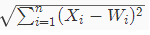

相传，在天地初成的远古时代，世界上只有一种叫做“元”的花。接下来，出 现了一位拥有魔法的花仙子，她能
给花附加属性，从此，“元”便不断变异，产生了大千世界千奇百怪的各种各样的花。据说，花仙子既可存在于二
维空间（平 面），又可存在于三维空间（立体），还可存在于n维空间（想象）。二维空间的点可用向量（x1,x2
）表示，三维空间的点可用向量（x1,x2,x3）表 示，一般来说，n维空间的点可用向量（x1,x2,…,xn）表示。而n
维空间中两点（x1,x2,…,xn）与（w1,w2,…,wn）之间的距离定义为

在n维空间中，花仙子每实施魔法就要选择一个参考点（w1,w2,…,wn）和一个作用半径r，并且参考点的位置和作
用半径的大小可以任意选择。这时，n 维空间中所有与参考点（w1,w2,…,wn）之间的距离小于作用半径r的花都会
受到这次魔法的影响。每次魔法都会给受到影响的花带来不同的属性，且的效 果可以叠加。一般来说，若花仙子
总共实施了m次魔法，则n维空间中处于某点的花所具有的属性可用长度为m的二进制串a1a2…am来描述，其中对 1
≤i≤m，若该花受到第i次魔法的影响，则ai的值为1,否则为0。显然，不同的属性对应不同的花。 现在的问题是
：花仙子在n维空间中实施了m次魔法后，最多能得到多少种不同的花？